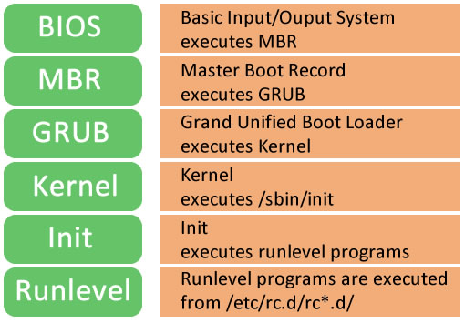
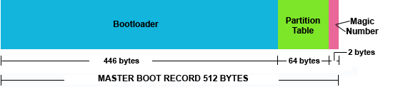
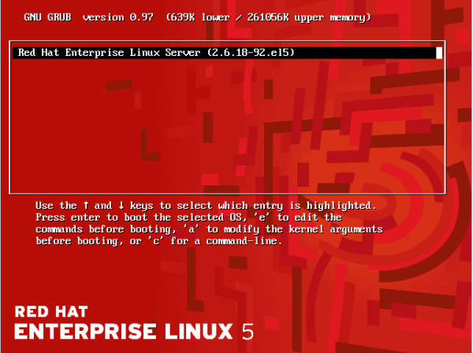
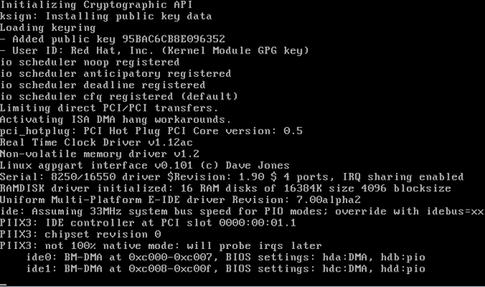
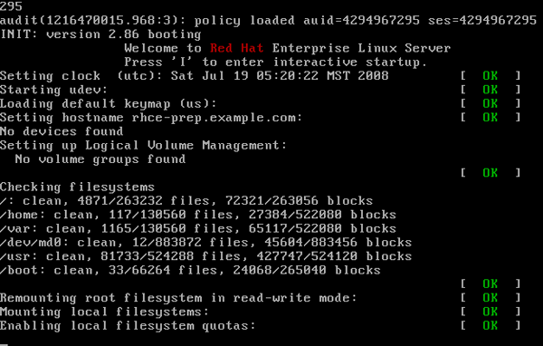

Missing Link in LINUX PLANET
Missing Link in LINUX PLANET
Redhat Booting Process
POST is very important thing to have before the Operating system is loaded. Just imagine if you have a faulty hard drive or faulty memory, sometimes these things can cause data loss. POST checks and confirms the integrity of the following hardware components. Timer IC's DMA controllers CPU Video ROM A full POST check will confirm the integrity of the following devices as well. Motherboard Keyboard Printer port Hard Drive etc If you are doing a warm start (which means you did a reset of a running machine, most of the times reset button is the small one near the power button on the CPU), a full POST check will not be conducted by the BIOS. However if you are doing a Cold Start, which means you have applied the power now, it will conduct a full POST. BIOS determines whether its a cold or warm start, by looking at a flag in a predefined memory location. Once the POST completes, the BIOS will inform you about any problems it found with the help of beep codes (through system speaker). Different number of beep codes have different meaning. There are two things that people often get confused with. Its CMOS & BIOS. CMOS & BIOS are two completely different things in the computer motherboard. CMOS is a small memory RAM chip that's present in the motherboard. This RAM is different from the computers main RAM chip (which are replaceable memory chips. These days RAM chips are available in the range of Gigabytes.). Unlike the main RAM chip, CMOS RAM does not flush its memory when a computer is turned off. It remembers all the configuration with the help of a battery called CMOS battery. Removing a CMOS battery will make the CMOS to forget all the configuration you have saved previously. This is the reason you can unlock a computer that's protected with a CMOS password, by simply removing the CMOS battery. Also removing the CMOS battery will make the operating system to show you wrong time. Because system time consistency is maintained in CMOS settings. So its always advisable to replace your CMOS battery at regular intervals, for proper functioning of the computer. Normally people say that we have modified BIOS settings. But its completely wrong. What they modified is in fact CMOS settings. CMOS settings is the place where you modify the boot order etc. Bios settings cannot be altered by the user. It requires a flash program provided by the manufacturer. So Let's get back to our booting process. Once the POST check is completed successfully, BIOS will look CMOS settings to know what is the boot order. Boot order is nothing but a user defined order which tells where to look for the operating system. The order will be something like the below. CD ROM HARD DISK USB Floppy DISK The above shown order means that the BIOS will look at CD ROM first to check whether an OS can be loaded from there, if it does not find a bootable disk in the CD ROM, it will look check whether a bootable OS is there in the hard disk, then USB and then Floppy disk. Let's assume that you don¿t have a bootable CD in your CD ROM drive, then the BIOS will turn to HARD disk.
1. BIOS BIOS stands for Basic Input/Output System Performs some system integrity checks Searches, loads, and executes the boot loader program. It looks for boot loader in floppy, cd-rom, or hard drive. You can press a key (typically F12 of F2, but it depends on your system) during the BIOS startup to change the boot sequence. Once the boot loader program is detected and loaded into the memory, BIOS gives the control to it. So, in simple terms BIOS loads and executes the MBR boot loader
2. MBR  MBR stands for Master Boot Record. It is located in the 1st sector of the bootable disk. Typically /dev/hda, or /dev/sda MBR is less than 512 bytes in size. This has three components 1) primary boot loader info in 1st 446 bytes 2) partition table info in next 64 bytes 3) mbr validation check in last 2 bytes. It contains information about GRUB (or LILO in old systems). So, in simple terms MBR loads and executes the GRUB boot loader.
3. GRUB  GRUB stands for Grand Unified Bootloader. If you have multiple kernel images installed on your system, you can choose which one to be executed. GRUB displays a splash screen, waits for few seconds, if you don¿t enter anything, it loads the default kernel image as specified in the grub configuration file. GRUB has the knowledge of the filesystem (the older Linux loader LILO didn¿t understand filesystem). Grub configuration file is /boot/grub/grub.conf (/etc/grub.conf is a link to this). The following is sample grub.conf of CentOS.
4. Kernel  Mounts the root file system as specified in the ¿root=¿ in grub.conf Kernel executes the /sbin/init program Since init was the 1st program to be executed by Linux Kernel, it has the process id (PID) of 1. Do a ¿ps -ef | grep init¿ and check the pid. initrd stands for Initial RAM Disk. initrd is used by kernel as temporary root file system until kernel is booted and the real root file system is mounted. It also contains necessary drivers compiled inside, which helps it to access the hard drive partitions, and other hardware.
5. Init  Looks at the /etc/inittab file to decide the Linux run level. Following are the available run levels 0 halt 1 Single user mode 2 Multiuser, without NFS 3 Full multiuser mode 4 unused 5 X11 6 reboot Init identifies the default initlevel from /etc/inittab and uses that to load all appropriate program. Execute ¿grep initdefault /etc/inittab¿ on your system to identify the default run level If you want to get into trouble, you can set the default run level to 0 or 6. Since you know what 0 and 6 means, probably you might not do that. Typically you would set the default run level to either 3 or 5.
6. Runlevel programs
 When the Linux system is booting up, you might see various services getting started. For example, it might say ¿starting sendmail ¿. OK¿. Those are the runlevel programs, executed from the run level directory as defined by your run level.
Depending on your default init level setting, the system will execute the programs from one of the following directories.
Run level 0 ¿ /etc/rc.d/rc0.d/
Run level 1 ¿ /etc/rc.d/rc1.d/
Run level 2 ¿ /etc/rc.d/rc2.d/
Run level 3 ¿ /etc/rc.d/rc3.d/
Run level 4 ¿ /etc/rc.d/rc4.d/
Run level 5 ¿ /etc/rc.d/rc5.d/
Run level 6 ¿ /etc/rc.d/rc6.d/
Please note that there are also symbolic links available for these directory under /etc directly. So, /etc/rc0.d is linked to /etc/rc.d/rc0.d.
Under the /etc/rc.d/rc*.d/ directories, you would see programs that start with S and K.
Programs starts with S are used during startup. S for startup.
Programs starts with K are used during shutdown. K for kill.
There are numbers right next to S and K in the program names. Those are the sequence number in which the programs should be started or killed.
For example, S12syslog is to start the syslog deamon, which has the sequence number of 12. S80sendmail is to start the sendmail daemon, which has the sequence number of 80. So, syslog program will be started before sendmail.
When the Linux system is booting up, you might see various services getting started. For example, it might say ¿starting sendmail ¿. OK¿. Those are the runlevel programs, executed from the run level directory as defined by your run level.
Depending on your default init level setting, the system will execute the programs from one of the following directories.
Run level 0 ¿ /etc/rc.d/rc0.d/
Run level 1 ¿ /etc/rc.d/rc1.d/
Run level 2 ¿ /etc/rc.d/rc2.d/
Run level 3 ¿ /etc/rc.d/rc3.d/
Run level 4 ¿ /etc/rc.d/rc4.d/
Run level 5 ¿ /etc/rc.d/rc5.d/
Run level 6 ¿ /etc/rc.d/rc6.d/
Please note that there are also symbolic links available for these directory under /etc directly. So, /etc/rc0.d is linked to /etc/rc.d/rc0.d.
Under the /etc/rc.d/rc*.d/ directories, you would see programs that start with S and K.
Programs starts with S are used during startup. S for startup.
Programs starts with K are used during shutdown. K for kill.
There are numbers right next to S and K in the program names. Those are the sequence number in which the programs should be started or killed.
For example, S12syslog is to start the syslog deamon, which has the sequence number of 12. S80sendmail is to start the sendmail daemon, which has the sequence number of 80. So, syslog program will be started before sendmail.

Copyright © 2013 - 2015 Linux Connector . All rights reserved.